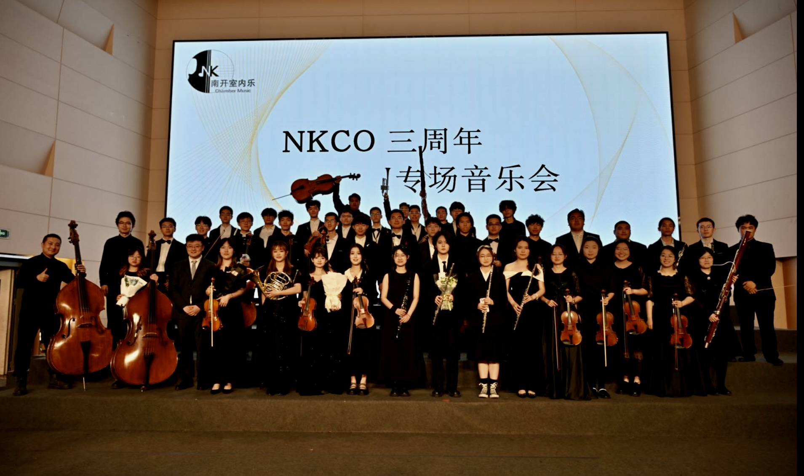

南开大学室内乐团(Nankai University Student Chamber Orchestra, NKCO) 始于2021年，是由南开大学学生交响乐团成员发起成立的室内乐演奏团体，目前有来自南开大学各非艺术院系的60余位业余音乐爱好者加入。 对于走过了四年冬夏的我们而言，接下来的时间更会坚定自己的初心，把音乐带来的感动、温暖和慰藉传递给更多人。
乐团成员来自各个学院，涵盖弦乐、管乐、键盘乐等多个乐器种类。我们在专业指导下不断精进技艺，力求在每一次演出中呈现出最佳状态。
室内乐团的前身——南开大学学生交响乐团（Nankai Student Symphony Orchestra, NKO)，成立于2001年10月。著名青年指挥金刚、王昊晨曾担任乐团常任指挥。二十年间，乐团曾在国家大剧院与学生合唱团共同举办专场音乐会， 成为第一支在国家大剧院举行专场音乐会的国内高校艺术团；多次在全国大学生艺术展演比赛中获得优异成绩；多次成功举办校内专场音乐会。
